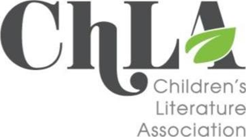

ACLAR Conference

Deakin University’s Waterfront Campus hosts the conference on children’s literature in a time of crisis.
Children’s literature, literacy and childhood

Find conferences on children’s and young adult literature.
Deakin University’s Waterfront Campus hosts the conference on children’s literature in a time of crisis.

Children’s Literature in a Changing World: Research in Theory & Praxis. The conference brings together researchers working on children’s literature across different theoretical and methodological approaches.
A publishing and illustration fair with talks, professional events and exhibitions.
The Politics and Poetics of Friendship: The Ethics of Storytelling and Companionship. The 2026 edition took place at the University of Crete in Rethymno.
2026 conference archive
Defiance, Resistance, Rebellion. See the organiser for registration and programme updates.
The 2027 theme looks at how technologies shape language and literacy education.

Embracing Bibliodiversity: Researching Children’s Literature in the 21st Century. Main proposal deadline: 1 December 2026.
The 11th conference takes place at the Goethe-Institut in Athens.
IBBY’s international congress brings together children’s book specialists and reading organisations.
YASA’s 2026 conference took place on 2–6 November. The events page also lists seminars and member events.
UK event connecting children’s literature research and practice.
Kent State University’s specialist picturebook research symposium. The organiser maintains information on earlier programmes.